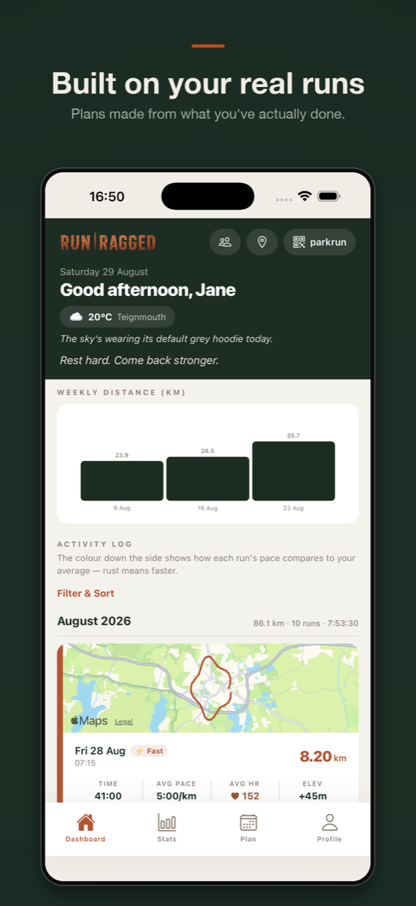
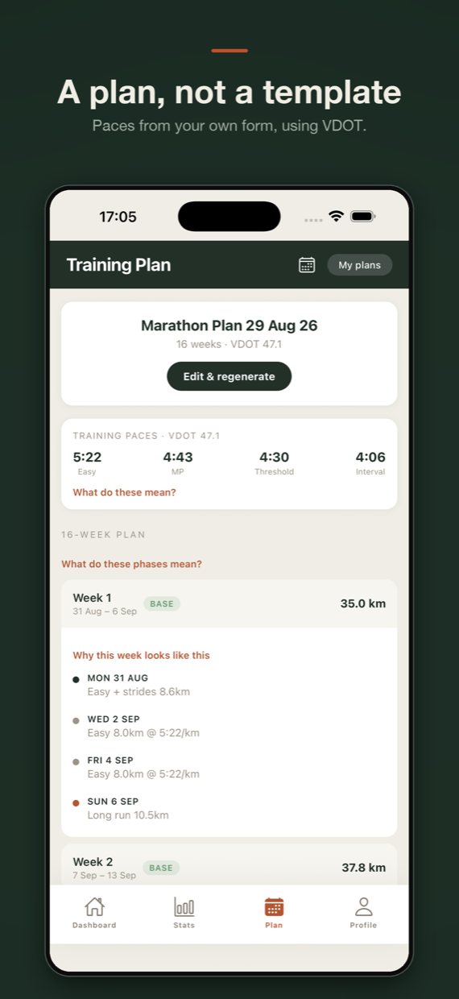
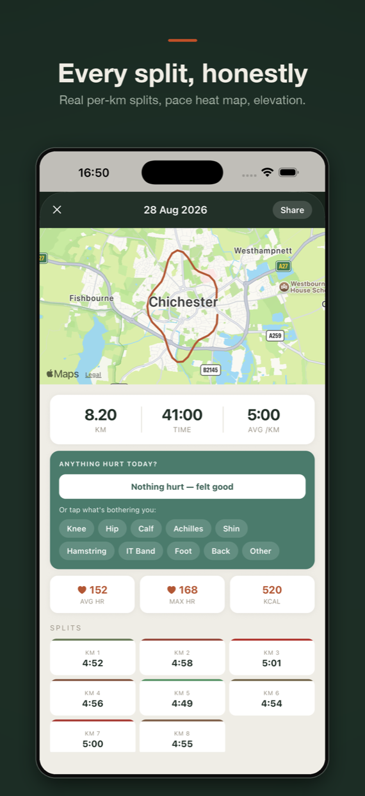
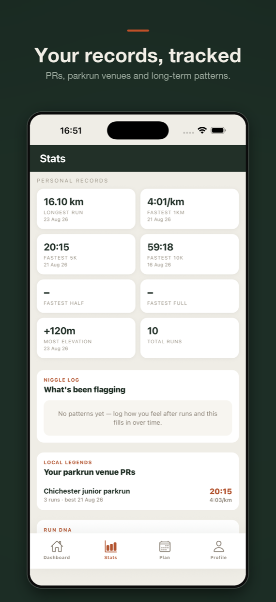
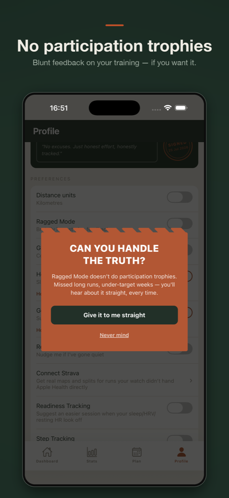
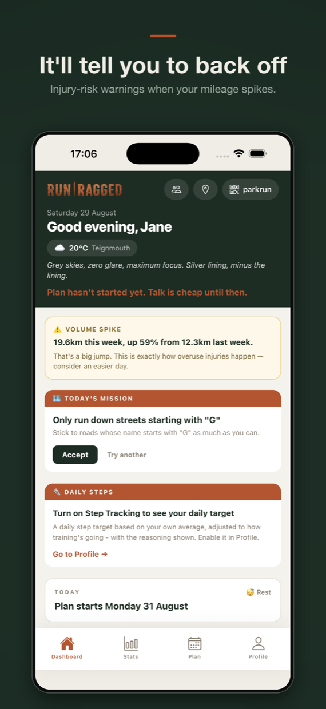

Out now on the App Store
Most running apps tell you what you want to hear.
Run Ragged builds a training plan from the runs you've actually done, then tells you the truth about how it's going. Some weeks that's encouraging. Some weeks it isn't.
Download on the App StoreFree to download · Pro is two weeks free, then £8.99/month or £69.99/year
Swipe to look around






Built on your real running
Run Ragged reads your workouts from Apple Health and works out where you actually are, using the VDOT method from Jack Daniels' Running Formula. Your paces come from your own recent form — not a guess based on your age.
Miss a week and the plan adjusts. Get injured and you can pause it, then pick up where you left off instead of starting again.
Every week explains itself — why this distance, why this pace, why a cutback now. No black box telling you to trust it.
Mileage jumping too fast is how overuse injuries start. Run Ragged notices and says so, rather than congratulating you.
On your wrist
Today's workout on screen before you start. Live pace, distance, heart rate and heart-rate zones while you run. Interval reps counted automatically, so you're not doing arithmetic at five in the morning.
Runs and their GPS routes go straight into your permanent Health record — not locked inside one app you might stop using.
Per-kilometre splits, a pace heat map and elevation gain. Heat-Adjusted Pace so a hard July effort isn't judged against a cool March morning.
Same route, run before, side by side. Sometimes that's a new best. Sometimes it's a reminder.
Things other apps don't do
Unvarnished feedback on your training, behind a "can you handle the truth?" gate. Missed long runs and under-target weeks get mentioned.
Always on your phone, for the Saturday mornings you leave the paper one at home.
Set a distance challenge and drag your friends through it. A shared leaderboard, no algorithm deciding who deserves a trophy.
Send someone a link and let them watch your dot move, for the runs where that matters. Deleted automatically once you're done.
Two trophy cases. One for the fast runs, one for the hard ones — because they aren't the same thing.
Log how you felt after a run and patterns surface over time. The knee that only complains after hills, for instance.
Pricing
Free
£0
No trial, no card, no countdown
Run Ragged Pro
£8.99 /month
or £69.99/year · two weeks free · cancel any time
Not a coach, and not a doctor. Run Ragged gives you training guidance based on established sports science. It isn't medical advice and it isn't a substitute for a physio or a real coach. Talk to a doctor before starting any new training programme.
Requires iPhone. An Apple Watch is recommended for the full experience.